15 Annotations
These charts draw marks over the data to point things out: reference lines (rule), intervals (rect), labels (text), a picture (image) and function curves (function). rule, rect and text can also draw one mark per row.
(ns reference.charts-annotations
(:require [fastmath.core :as m]
[fastmath.stats :as stats]
[cljplot2.chart :as chart]
[cljplot2.core :as plot]
[cljplot2.describe :as describe]
[notebook-utils :as nu])
(:import [java.awt.image BufferedImage]
[java.time LocalDate]))Data: Old Faithful geyser eruptions, R datasets package faithful (Härdle 1991; Azzalini & Bowman 1990); licence: Part of R (GPL-2 | GPL-3).
(def faithful (nu/dataset :faithful))| eruptions | waiting |
|---|---|
| 3.6 | 79 |
| 1.8 | 54 |
| 3.333 | 74 |
| 2.283 | 62 |
| 4.533 | 85 |
| 2.883 | 55 |
| 4.7 | 88 |
| 3.6 | 85 |
| 1.95 | 51 |
| 4.35 | 85 |
| 1.833 | 54 |
| 3.917 | 84 |
| 4.2 | 78 |
| 1.75 | 47 |
| 4.7 | 83 |
| 2.167 | 52 |
| 1.75 | 62 |
| 4.8 | 84 |
| 1.6 | 52 |
| 4.25 | 79 |
| 1.8 | 51 |
| 1.75 | 47 |
| 3.45 | 78 |
| 3.067 | 69 |
| 4.533 | 74 |
| 3.6 | 83 |
| 1.967 | 55 |
| 4.083 | 76 |
| 3.85 | 78 |
| 4.433 | 79 |
| 4.3 | 73 |
| 4.467 | 77 |
| 3.367 | 66 |
| 4.033 | 80 |
| 3.833 | 74 |
| 2.017 | 52 |
| 1.867 | 48 |
| 4.833 | 80 |
| 1.833 | 59 |
| 4.783 | 90 |
| 4.35 | 80 |
| 1.883 | 58 |
| 4.567 | 84 |
| 1.75 | 58 |
| 4.533 | 73 |
| 3.317 | 83 |
| 3.833 | 64 |
| 2.1 | 53 |
| 4.633 | 82 |
| 2 | 59 |
| 4.8 | 75 |
| 4.716 | 90 |
| 1.833 | 54 |
| 4.833 | 80 |
| 1.733 | 54 |
| 4.883 | 83 |
| 3.717 | 71 |
| 1.667 | 64 |
| 4.567 | 77 |
| 4.317 | 81 |
| 2.233 | 59 |
| 4.5 | 84 |
| 1.75 | 48 |
| 4.8 | 82 |
| 1.817 | 60 |
| 4.4 | 92 |
| 4.167 | 78 |
| 4.7 | 78 |
| 2.067 | 65 |
| 4.7 | 73 |
| 4.033 | 82 |
| 1.967 | 56 |
| 4.5 | 79 |
| 4 | 71 |
| 1.983 | 62 |
| 5.067 | 76 |
| 2.017 | 60 |
| 4.567 | 78 |
| 3.883 | 76 |
| 3.6 | 83 |
| 4.133 | 75 |
| 4.333 | 82 |
| 4.1 | 70 |
| 2.633 | 65 |
| 4.067 | 73 |
| 4.933 | 88 |
| 3.95 | 76 |
| 4.517 | 80 |
| 2.167 | 48 |
| 4 | 86 |
| 2.2 | 60 |
| 4.333 | 90 |
| 1.867 | 50 |
| 4.817 | 78 |
| 1.833 | 63 |
| 4.3 | 72 |
| 4.667 | 84 |
| 3.75 | 75 |
| 1.867 | 51 |
| 4.9 | 82 |
| … | … |
Data: US economic time series, 1967-2015, R ggplot2 package economics (Federal Reserve Bank of St. Louis, FRED); licence: MIT (ggplot2).
(def economics (nu/dataset :economics))| date | pce | pop | psavert | uempmed | unemploy |
|---|---|---|---|---|---|
| 1967-07-01 | 506.7 | 198712 | 12.6 | 4.5 | 2944 |
| 1967-08-01 | 509.8 | 198911 | 12.6 | 4.7 | 2945 |
| 1967-09-01 | 515.6 | 199113 | 11.9 | 4.6 | 2958 |
| 1967-10-01 | 512.2 | 199311 | 12.9 | 4.9 | 3143 |
| 1967-11-01 | 517.4 | 199498 | 12.8 | 4.7 | 3066 |
| 1967-12-01 | 525.1 | 199657 | 11.8 | 4.8 | 3018 |
| 1968-01-01 | 530.9 | 199808 | 11.7 | 5.1 | 2878 |
| 1968-02-01 | 533.6 | 199920 | 12.3 | 4.5 | 3001 |
| 1968-03-01 | 544.3 | 200056 | 11.7 | 4.1 | 2877 |
| 1968-04-01 | 544 | 200208 | 12.3 | 4.6 | 2709 |
| 1968-05-01 | 549.8 | 200361 | 12 | 4.4 | 2740 |
| 1968-06-01 | 556.3 | 200536 | 11.7 | 4.4 | 2938 |
| 1968-07-01 | 563.2 | 200706 | 10.7 | 4.5 | 2883 |
| 1968-08-01 | 567 | 200898 | 10.5 | 4.2 | 2768 |
| 1968-09-01 | 568.2 | 201095 | 10.6 | 4.6 | 2686 |
| 1968-10-01 | 571.6 | 201290 | 10.8 | 4.8 | 2689 |
| 1968-11-01 | 576.7 | 201466 | 10.6 | 4.4 | 2715 |
| 1968-12-01 | 576.5 | 201621 | 11.1 | 4.4 | 2685 |
| 1969-01-01 | 583.5 | 201760 | 10.3 | 4.4 | 2718 |
| 1969-02-01 | 588.7 | 201881 | 9.7 | 4.9 | 2692 |
| 1969-03-01 | 588.9 | 202023 | 10.2 | 4 | 2712 |
| 1969-04-01 | 593.9 | 202161 | 9.7 | 4 | 2758 |
| 1969-05-01 | 600.3 | 202331 | 10.1 | 4.2 | 2713 |
| 1969-06-01 | 600.9 | 202507 | 11.1 | 4.4 | 2816 |
| 1969-07-01 | 602.7 | 202677 | 11.8 | 4.4 | 2868 |
| 1969-08-01 | 609.9 | 202877 | 11.5 | 4.4 | 2856 |
| 1969-09-01 | 613.2 | 203090 | 11.6 | 4.7 | 3040 |
| 1969-10-01 | 618.5 | 203302 | 11.4 | 4.5 | 3049 |
| 1969-11-01 | 620.5 | 203500 | 11.6 | 4.8 | 2856 |
| 1969-12-01 | 622.8 | 203675 | 11.8 | 4.6 | 2884 |
| 1970-01-01 | 628.7 | 203849 | 11.8 | 4.6 | 3201 |
| 1970-02-01 | 634 | 204008 | 11.7 | 4.5 | 3453 |
| 1970-03-01 | 632.3 | 204156 | 12.4 | 4.6 | 3635 |
| 1970-04-01 | 636 | 204401 | 13.3 | 4.1 | 3797 |
| 1970-05-01 | 642.4 | 204607 | 12.4 | 4.7 | 3919 |
| 1970-06-01 | 646.3 | 204830 | 12.3 | 4.9 | 4071 |
| 1970-07-01 | 648.5 | 205052 | 13.5 | 5.1 | 4175 |
| 1970-08-01 | 652.9 | 205295 | 13.4 | 5.4 | 4256 |
| 1970-09-01 | 659.1 | 205540 | 12.9 | 5.2 | 4456 |
| 1970-10-01 | 658.3 | 205788 | 13.1 | 5.2 | 4591 |
| 1970-11-01 | 656.6 | 206024 | 13.6 | 5.6 | 4898 |
| 1970-12-01 | 665.6 | 206238 | 13.2 | 5.9 | 5076 |
| 1971-01-01 | 676.1 | 206466 | 13.3 | 6.2 | 4986 |
| 1971-02-01 | 679.4 | 206668 | 13.3 | 6.3 | 4903 |
| 1971-03-01 | 682 | 206855 | 13.5 | 6.4 | 4987 |
| 1971-04-01 | 688.8 | 207065 | 13.2 | 6.5 | 4959 |
| 1971-05-01 | 691.1 | 207260 | 13.6 | 6.7 | 4996 |
| 1971-06-01 | 699.8 | 207462 | 14.7 | 5.7 | 4949 |
| 1971-07-01 | 698.9 | 207661 | 13.8 | 6.2 | 5035 |
| 1971-08-01 | 704.9 | 207881 | 13.6 | 6.4 | 5134 |
| 1971-09-01 | 713 | 208114 | 13.3 | 5.8 | 5042 |
| 1971-10-01 | 715.8 | 208345 | 13.3 | 6.5 | 4954 |
| 1971-11-01 | 720.9 | 208555 | 13.1 | 6.4 | 5161 |
| 1971-12-01 | 728.4 | 208740 | 13 | 6.2 | 5154 |
| 1972-01-01 | 731.5 | 208917 | 12.5 | 6.2 | 5019 |
| 1972-02-01 | 736.2 | 209061 | 12.8 | 6.6 | 4928 |
| 1972-03-01 | 749.2 | 209212 | 11.8 | 6.6 | 5038 |
| 1972-04-01 | 752.5 | 209386 | 11.5 | 6.7 | 4959 |
| 1972-05-01 | 758 | 209545 | 11.7 | 6.6 | 4922 |
| 1972-06-01 | 761.6 | 209725 | 11.7 | 5.4 | 4923 |
| 1972-07-01 | 769.9 | 209896 | 11.7 | 6.1 | 4913 |
| 1972-08-01 | 776.3 | 210075 | 12 | 6 | 4939 |
| 1972-09-01 | 781.1 | 210278 | 12.2 | 5.6 | 4849 |
| 1972-10-01 | 794.9 | 210479 | 13 | 5.7 | 4875 |
| 1972-11-01 | 800.5 | 210656 | 13.6 | 5.7 | 4602 |
| 1972-12-01 | 806.1 | 210821 | 13.7 | 6.1 | 4543 |
| 1973-01-01 | 816.5 | 210985 | 12.4 | 5.7 | 4326 |
| 1973-02-01 | 825.8 | 211120 | 12.5 | 5.2 | 4452 |
| 1973-03-01 | 832.8 | 211254 | 12.7 | 5.5 | 4394 |
| 1973-04-01 | 835.7 | 211420 | 13.2 | 5 | 4459 |
| 1973-05-01 | 841.6 | 211577 | 13.2 | 4.9 | 4329 |
| 1973-06-01 | 844.3 | 211746 | 13.6 | 5 | 4363 |
| 1973-07-01 | 854.1 | 211909 | 13.2 | 5.2 | 4305 |
| 1973-08-01 | 853.3 | 212092 | 13.9 | 4.9 | 4305 |
| 1973-09-01 | 869.2 | 212289 | 13.1 | 5.4 | 4350 |
| 1973-10-01 | 868.2 | 212475 | 14.4 | 5.5 | 4144 |
| 1973-11-01 | 876.9 | 212634 | 14.4 | 5.1 | 4396 |
| 1973-12-01 | 876.6 | 212785 | 14.8 | 4.7 | 4489 |
| 1974-01-01 | 884.5 | 212932 | 14.3 | 5 | 4644 |
| 1974-02-01 | 889.7 | 213074 | 14.2 | 5.1 | 4731 |
| 1974-03-01 | 901.4 | 213211 | 13.4 | 4.8 | 4634 |
| 1974-04-01 | 910.8 | 213361 | 13.1 | 5 | 4618 |
| 1974-05-01 | 922.4 | 213513 | 12.8 | 4.6 | 4705 |
| 1974-06-01 | 928 | 213686 | 12.8 | 5.3 | 4927 |
| 1974-07-01 | 937.9 | 213854 | 12.8 | 5.7 | 5063 |
| 1974-08-01 | 954.8 | 214042 | 12.1 | 5 | 5022 |
| 1974-09-01 | 955.1 | 214246 | 12.9 | 5.3 | 5437 |
| 1974-10-01 | 959.2 | 214451 | 13.4 | 5.5 | 5523 |
| 1974-11-01 | 956.2 | 214625 | 13.8 | 5.2 | 6140 |
| 1974-12-01 | 961.8 | 214782 | 14 | 5.7 | 6636 |
| 1975-01-01 | 975.6 | 214931 | 13.2 | 6.3 | 7501 |
| 1975-02-01 | 989.4 | 215065 | 12.5 | 7.1 | 7520 |
| 1975-03-01 | 990.6 | 215198 | 12.7 | 7.2 | 7978 |
| 1975-04-01 | 995 | 215353 | 14.2 | 8.7 | 8210 |
| 1975-05-01 | 1018.9 | 215523 | 17.3 | 9.4 | 8433 |
| 1975-06-01 | 1026.8 | 215768 | 14.3 | 8.8 | 8220 |
| 1975-07-01 | 1039.8 | 215973 | 12.6 | 8.6 | 8127 |
| 1975-08-01 | 1047 | 216195 | 13 | 9.2 | 7928 |
| 1975-09-01 | 1054.8 | 216393 | 13 | 9.2 | 7923 |
| 1975-10-01 | 1060.9 | 216587 | 13.4 | 8.6 | 7897 |
| … | … | … | … | … | … |
15.1 Reference lines
chart/rule draws straight lines across the panel: vertical at an x, horizontal at a y, or sloped, y = intercept + slope · x. Use it for thresholds, means or a trend; it draws a line per row of data, or at positions its options give.
:mapping:x– Draws a line across the panel at each row's x, vertical unless the plot is flipped.:y– Draws a line across the panel at each row's y, horizontal unless the plot is flipped.:slope– The slope of each row's sloped line; it needs a mapped:intercept.:intercept– The intercept of each row's sloped line; it needs a mapped:slope.:color– Splits the rows into groups, each with its own line colour.:dash– Splits the rows into groups, each with its own dash style.:group– Splits the rows into groups that look the same, each row still its own line.
(def thresholds [{:at 55 :kind "short wait"} {:at 80 :kind "long wait"}])| at | kind |
|---|---|
| 55 | short wait |
| 80 | long wait |
(plot/render-image {:data faithful
:mapping {:x :eruptions :y :waiting}
:charts [(chart/scatter)
(chart/rule {:data thresholds :mapping {:y :at :color :kind} :line-width 2})]
:labels {:x "eruptions [min]" :y "waiting [min]"}}
{:width 600 :height 360})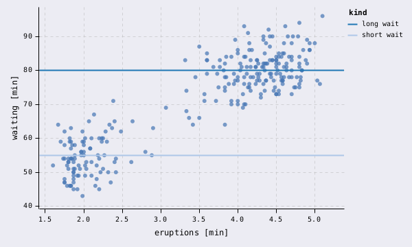
Its options place the lines without data:
(plot/render-image (plot/arrange [{:data faithful :mapping {:x :eruptions :y :waiting}
:charts [(chart/scatter) (chart/rule {:x [2 3 4] :dash :dashed})]
:labels {:title ":x [2 3 4]"}}
{:data faithful :mapping {:x :eruptions :y :waiting}
:charts [(chart/scatter)
(chart/rule {:slope [10.7 12] :intercept [33.5 25] :line-width 2
:color [200 80 40]})]
:labels {:title ":slope, :intercept (two lines)"}}
{:data faithful :mapping {:x :eruptions :y :waiting}
:charts [(chart/scatter) (chart/rule {:y [55 80] :line-width 2 :color [40 140 60]})]
:labels {:title ":y [55 80]"}}]
{:columns 3})
{:width 1000 :height 330})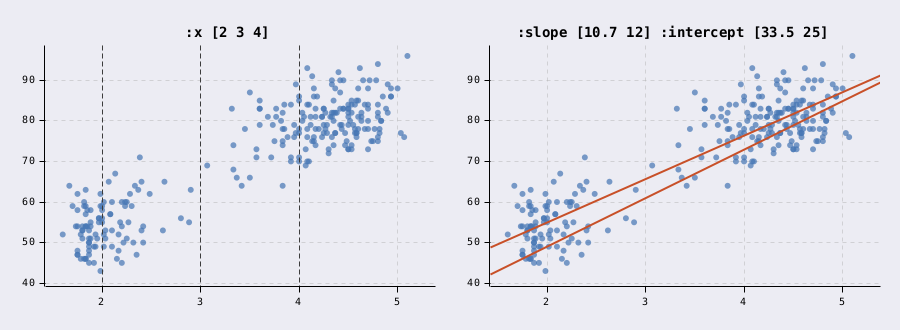
15.2 Rectangles
chart/rect draws rectangles over x and y intervals, or a band across the panel over one of them; an open end (nil) reaches the panel’s edge. Use it to shade periods, ranges or regions; list it before the charts it should stay behind.
:mapping:x0– The start x of each row's rectangle, with:x1; anilvalue reaches the panel's edge.:x1– The end x of each row's rectangle, with:x0; anilvalue reaches the panel's edge.:y0– The start y of each row's rectangle, with:y1; anilvalue reaches the panel's edge.:y1– The end y of each row's rectangle, with:y0; anilvalue reaches the panel's edge.:color– Fills the rectangles: by a categorical value per group, or by any colour scale per row, e.g. identity colours for swatches.:pattern– Splits the rows into groups, each with its own fill pattern.:shape– Splits the rows into groups that look the same, as:groupdoes.:size– Splits the rows into groups that look the same, as:groupdoes.:group– Splits the rows into groups that look the same, each row still its own rectangle.
(def recessions [{:name "1973-75" :from (LocalDate/parse "1973-11-01") :to (LocalDate/parse "1975-03-01")}
{:name "1980-82" :from (LocalDate/parse "1980-01-01") :to (LocalDate/parse "1982-11-01")}
{:name "1990-91" :from (LocalDate/parse "1990-07-01") :to (LocalDate/parse "1991-03-01")}
{:name "2001" :from (LocalDate/parse "2001-03-01") :to (LocalDate/parse "2001-11-01")}
{:name "2007-09" :from (LocalDate/parse "2007-12-01") :to (LocalDate/parse "2009-06-01")}])| name | from | to |
|---|---|---|
| 1973-75 | 1973-11-01 | 1975-03-01 |
| 1980-82 | 1980-01-01 | 1982-11-01 |
| 1990-91 | 1990-07-01 | 1991-03-01 |
| 2001 | 2001-03-01 | 2001-11-01 |
| 2007-09 | 2007-12-01 | 2009-06-01 |
(plot/render-image {:data economics
:mapping {:x #(LocalDate/parse (:date %)) :y :unemploy}
:charts [(chart/rect {:data recessions :mapping {:x0 :from :x1 :to}})
(chart/line)]
:labels {:y "unemployed [thousands]"}}
{:width 700 :height 340})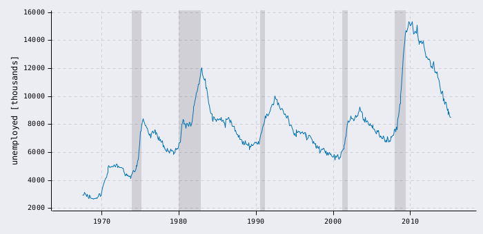
Its options give literal intervals, their fill and outline, and how much of a level’s band they cover. On the left, two y intervals with a fill colour each; on the right, one rectangle from level b to level c, with :width 0.6 covering only part of each level’s band:
(def levels-data [{:k "a" :v 3} {:k "b" :v 5} {:k "c" :v 4} {:k "d" :v 6}])| k | v |
|---|---|
| a | 3 |
| b | 5 |
| c | 4 |
| d | 6 |
(plot/render-image (plot/arrange [{:data faithful :mapping {:x :eruptions :y :waiting}
:charts [(chart/rect {:y [[nil 60] [75 nil]] :fill [[0 114 178] [200 80 40]] :alpha 0.2
:stroke-color :darker :stroke-width 2})
(chart/scatter)]
:labels {:title ":y intervals, :fill per interval, :stroke-width 2"}}
{:data levels-data :mapping {:x :k :y :v}
:charts [(chart/rect {:x ["b" "c"] :width 0.6 :fill [255 200 0 110]})
(chart/bar)]
:scales {:x {:domain ["a" "b" "c" "d"]}}
:labels {:title ":x [\"b\" \"c\"] :width 0.6"}}]
{:columns 2})
{:width 900 :height 330})
15.3 Text labels
chart/text draws labels at positions: a label per row of data, with :label as its text, or at positions its options give, also at a fraction of the panel ([:panel f]). Use it to name points, mark values or add notes. It reads the plot’s data but takes only the facet keys of the plot’s mapping; its positions and texts come from its own :mapping.
:mapping:x– The x of each row's label.:y– The y of each row's label.:label– The text of each row's label; a value becomes a string.$...$in it andplot/mathvalues draw as formulas, unless:dollar-math falsekeeps dollars as typed.:angle– Turns each row's label by degrees, clockwise; anilor non-finite value takes:rotation.:x-span– Each label's room along x, in x units from its x: a longer label shrinks, down to its text role's:min-size. The chart fits only unrotated labels in an unflipped cartesian plot, and not for anilspan.:color– Splits the rows into groups, each with its own text colour.:group– Splits the rows into groups that look the same;:selectkeeps labels per group.
(def cities [{:city "Oslo" :lon 10.8 :lat 59.9} {:city "Rome" :lon 12.5 :lat 41.9} {:city "Madrid" :lon -3.7 :lat 40.4}
{:city "Paris" :lon 2.4 :lat 48.9} {:city "Warsaw" :lon 21.0 :lat 52.2}])| city | lon | lat |
|---|---|---|
| Oslo | 10.8 | 59.9 |
| Rome | 12.5 | 41.9 |
| Madrid | -3.7 | 40.4 |
| Paris | 2.4 | 48.9 |
| Warsaw | 21.0 | 52.2 |
(plot/render-image {:data cities
:mapping {:x :lon :y :lat}
:charts [(chart/scatter)
(chart/text {:mapping {:x :lon :y :lat :label :city} :anchor [:left :bottom] :offset [4 2]})]
:labels {:x "longitude" :y "latitude"}}
{:width 550 :height 340})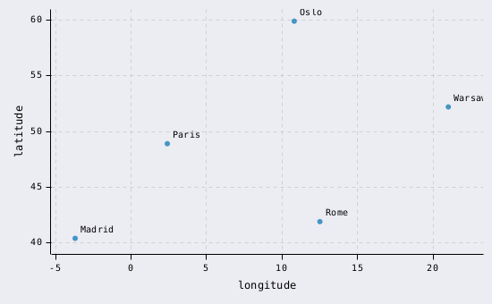
15.3.1 Labels
These options give the labels’ positions, texts and text role, or keep one label per group at a line’s end:
(def growth (for [g ["alpha" "beta" "gamma"] t (range 10)]
{:g g :t t :v (+ (case g "alpha" 2.0 "beta" 0.0 "gamma" 9.0) (* t (case g "alpha" 1.0 "beta" 1.6 "gamma" 0.4)))}))| g | t | v |
|---|---|---|
| alpha | 0 | 2.0 |
| alpha | 1 | 3.0 |
| alpha | 2 | 4.0 |
| alpha | 3 | 5.0 |
| alpha | 4 | 6.0 |
| alpha | 5 | 7.0 |
| alpha | 6 | 8.0 |
| alpha | 7 | 9.0 |
| alpha | 8 | 10.0 |
| alpha | 9 | 11.0 |
| beta | 0 | 0.0 |
| beta | 1 | 1.6 |
| beta | 2 | 3.2 |
| beta | 3 | 4.800000000000001 |
| beta | 4 | 6.4 |
| beta | 5 | 8.0 |
| beta | 6 | 9.600000000000001 |
| beta | 7 | 11.200000000000001 |
| beta | 8 | 12.8 |
| beta | 9 | 14.4 |
| gamma | 0 | 9.0 |
| gamma | 1 | 9.4 |
| gamma | 2 | 9.8 |
| gamma | 3 | 10.2 |
| gamma | 4 | 10.6 |
| gamma | 5 | 11.0 |
| gamma | 6 | 11.4 |
| gamma | 7 | 11.8 |
| gamma | 8 | 12.2 |
| gamma | 9 | 12.6 |
On the left, a note in the panel’s top left corner and a label turned by -30 degrees; on the right, :select :last names each line at its end:
(plot/render-image (plot/arrange [{:data faithful :mapping {:x :eruptions :y :waiting}
:charts [(chart/scatter)
(chart/text {:x [:panel 0.02] :y [:panel 0.98] :anchor [:left :top]
:text "272 eruptions"})
(chart/text {:x 3 :y 70 :text "few here" :rotation -30})]
:labels {:title "[:panel f], :rotation -30"}}
{:data growth :mapping {:x :t :y :v :color :g}
:charts [(chart/line)
(chart/text {:mapping {:x :t :y :v :color :g :label :g}
:select :last :reserve-room :anchor})]
:labels {:title ":select :last, :reserve-room :anchor"}
:legend false}]
{:columns 2})
{:width 900 :height 330})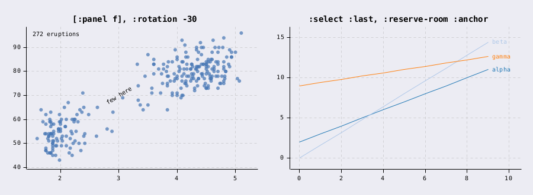
Here the label changes along each line with its phase (beta’s early phase is shorter): the default :select-within gives an end label per text, :group one per line. A [:panel f] position also works on an axis no chart maps, such as the dot plot’s vertical:
(plot/render-image (plot/arrange [{:data growth :mapping {:x :t :y :v :color :g}
:charts [(chart/line)
(chart/text {:mapping {:x :t :y :v :color :g
:label #(str (:g %) (if (< (:t %) (if (= "beta" (:g %)) 3 5)) " early" " late"))}
:select :last :select-within :group-and-label :reserve-room :anchor})]
:labels {:title ":select-within :group-and-label"}
:legend false}
{:data growth :mapping {:x :t :y :v :color :g}
:charts [(chart/line)
(chart/text {:mapping {:x :t :y :v :color :g
:label #(str (:g %) (if (< (:t %) (if (= "beta" (:g %)) 3 5)) " early" " late"))}
:select :last :select-within :group :reserve-room :anchor})]
:labels {:title ":select-within :group"}
:legend false}
{:data faithful :mapping {:x :eruptions}
:charts [(chart/dotplot {:binwidth 0.1})
(chart/text {:x [:panel 0.02] :y [:panel 0.95] :anchor [:left :top]
:text "eruption lengths"})]
:labels {:title "[:panel f] without a y scale"}}]
{:columns 3})
{:width 1000 :height 320})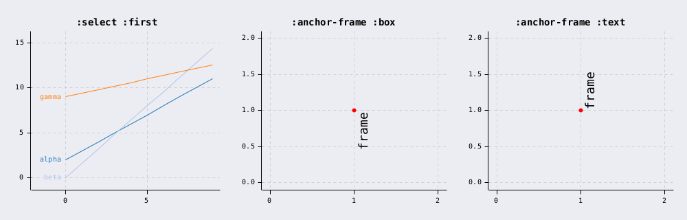
:role picks the theme text role the labels take their style from: here one the theme adds (:callout, bottom right) and a builder’s (:network-label, small names on white boxes):
(plot/render-image {:data cities
:mapping {:x :lon :y :lat}
:charts [(chart/scatter)
(chart/text {:mapping {:x :lon :y :lat :label :city} :anchor [:left :bottom] :offset [4 2]
:role :network-label})
(chart/text {:x [:panel 0.98] :y [:panel 0.03] :anchor [:right :bottom] :text "European cities"
:role :callout})]
:theme {:text {:callout {:font "DejaVu Sans Mono" :size 13 :font-style :bold :color [178 34 34]
:inset 2}}}
:labels {:x "longitude" :y "latitude"}}
{:width 550 :height 340})
A text draws $...$ as a LaTeX formula (left; Formulas has the rules), as every label in cljplot2 does. :dollar-math false keeps the dollars as typed (right); \$ keeps one dollar literal in a text with formulas:
(plot/render-image (plot/arrange [{:data faithful :mapping {:x :eruptions :y :waiting}
:charts [(chart/scatter)
(chart/text {:x 3.5 :y 95 :text "mean wait $\\bar{w} = 71$ min"})]
:labels {:title "formula in the text"}}
{:data faithful :mapping {:x :eruptions :y :waiting}
:charts [(chart/scatter)
(chart/text {:x 3.5 :y 95 :text "mean wait $\\bar{w} = 71$ min" :dollar-math false})]
:labels {:title ":dollar-math false"}}]
{:columns 2})
{:width 900 :height 330})
15.3.2 Placement
These options place each label around its position: which point of its box sits there, a shift in pixels, a turn, and room kept past the data:
On the left, each line’s start label ends 5 pixels before the line begins, with room kept for the labels (:anchor [:right :middle], :offset [-5 0], :reserve-room :anchor). In the middle and on the right, a label turned by -90 degrees is anchored at its left top on the red point: :anchor-frame :box takes the turned label’s bounding box, :anchor-frame :text the start of the text’s top edge:
(def anchor-points [{:x 1 :y 1 :label "frame"}])| x | y | label |
|---|---|---|
| 1 | 1 | frame |
(plot/render-image (plot/arrange [{:data growth :mapping {:x :t :y :v :color :g}
:charts [(chart/line)
(chart/text {:mapping {:x :t :y :v :color :g :label :g}
:select :first :anchor [:right :middle] :offset [-5 0]
:reserve-room :anchor})]
:labels {:title ":select :first"}
:legend false}
{:data anchor-points :mapping {:x :x :y :y}
:charts [(chart/scatter {:color :red})
(chart/text {:mapping {:x :x :y :y :label :label} :rotation -90 :size 18
:anchor [:left :top] :anchor-frame :box})]
:scales {:x {:domain [0 2]} :y {:domain [0 2]}}
:labels {:title ":anchor-frame :box"}}
{:data anchor-points :mapping {:x :x :y :y}
:charts [(chart/scatter {:color :red})
(chart/text {:mapping {:x :x :y :y :label :label} :rotation -90 :size 18
:anchor [:left :top] :anchor-frame :text})]
:scales {:x {:domain [0 2]} :y {:domain [0 2]}}
:labels {:title ":anchor-frame :text"}}]
{:columns 3})
{:width 1000 :height 320})
15.3.3 Crowding
These options handle labels that overlap: draw them anyway, leave some out, or move them apart:
From left to right: every label kept, labels overlapping a larger city’s left out, then those labels fitted to a room. The rows are sorted by population, so the larger cities win. On the right a mapped :x-span gives each label room up to the next city east of it at about its latitude, else to the panel’s edge: Vienna (next to Bratislava) and Budapest (near the edge) shrink to fit, down to the :annotation role’s :min-size of 6 points (a role without :min-size doesn’t shrink). Builders use both for their node labels:
(def capitals [{:city "Paris" :lon 2.35 :lat 48.86 :pop 2.1} {:city "Berlin" :lon 13.40 :lat 52.52 :pop 3.7}
{:city "Vienna" :lon 16.37 :lat 48.21 :pop 2.0} {:city "Budapest" :lon 19.04 :lat 47.50 :pop 1.7}
{:city "Prague" :lon 14.42 :lat 50.08 :pop 1.3} {:city "Brussels" :lon 4.35 :lat 50.85 :pop 1.2}
{:city "Amsterdam" :lon 4.90 :lat 52.37 :pop 0.9} {:city "Bratislava" :lon 17.11 :lat 48.15 :pop 0.5}
{:city "Luxembourg" :lon 6.13 :lat 49.61 :pop 0.1} {:city "Ljubljana" :lon 14.51 :lat 46.06 :pop 0.3}
{:city "Zagreb" :lon 15.98 :lat 45.81 :pop 0.8} {:city "Bern" :lon 7.45 :lat 46.95 :pop 0.1}])| city | lon | lat | pop |
|---|---|---|---|
| Paris | 2.35 | 48.86 | 2.1 |
| Berlin | 13.4 | 52.52 | 3.7 |
| Vienna | 16.37 | 48.21 | 2.0 |
| Budapest | 19.04 | 47.5 | 1.7 |
| Prague | 14.42 | 50.08 | 1.3 |
| Brussels | 4.35 | 50.85 | 1.2 |
| Amsterdam | 4.9 | 52.37 | 0.9 |
| Bratislava | 17.11 | 48.15 | 0.5 |
| Luxembourg | 6.13 | 49.61 | 0.1 |
| Ljubljana | 14.51 | 46.06 | 0.3 |
| Zagreb | 15.98 | 45.81 | 0.8 |
| Bern | 7.45 | 46.95 | 0.1 |
(plot/render-image (plot/arrange (map (fn [[title text-chart]]
{:data (sort-by (comp - :pop) capitals)
:mapping {:x :lon :y :lat}
:charts [(chart/scatter) text-chart]
:scales {:x {:domain [0 24]}}
:labels {:title title :x nil :y nil}})
[[":overlapping-labels :keep"
(chart/text {:mapping {:x :lon :y :lat :label :city} :anchor [:left :middle] :offset [4 0]
:overlapping-labels :keep})]
[":overlapping-labels :drop"
(chart/text {:mapping {:x :lon :y :lat :label :city} :anchor [:left :middle] :offset [4 0]
:overlapping-labels :drop})]
[":drop, :x-span to the next city"
(chart/text {:mapping {:x :lon :y :lat :label :city
:x-span (fn [{:keys [lon lat]}]
(- (reduce min 24.0 (keep #(when (and (> (:lon %) lon) (< (abs (- (:lat %) lat)) 0.8)) (:lon %))
capitals))
lon))}
:anchor [:left :middle] :offset [4 0] :overlapping-labels :drop})]])
{:columns 3})
{:width 1000 :height 330})
:overlapping-labels :repel finds a free place inside the panel, off the labels placed before it and off every other label’s point, but not off other charts’ marks. It compares the drawn boxes in pixels, so it works the same in flipped, polar and faceted plots; a label larger than the panel stays where it is. A leader line (:label-leader) never crosses a label. A label in a box (:background, :inset) keeps its whole box apart and inside the panel (right). Here every car of mtcars, heaviest first; :repel-distance 100 leaves room for the heavy cars’ labels to move left of their points at the panel’s right edge:
Data: Motor Trend car road tests (1974), R datasets package mtcars (Henderson & Velleman 1981); licence: Part of R (GPL-2 | GPL-3).
(def mtcars (nu/dataset :mtcars))| model | mpg | cyl | disp | hp | drat | wt | qsec | vs | am | gear | carb |
|---|---|---|---|---|---|---|---|---|---|---|---|
| Mazda RX4 | 21 | 6 | 160 | 110 | 3.9 | 2.62 | 16.46 | 0 | 1 | 4 | 4 |
| Mazda RX4 Wag | 21 | 6 | 160 | 110 | 3.9 | 2.875 | 17.02 | 0 | 1 | 4 | 4 |
| Datsun 710 | 22.8 | 4 | 108 | 93 | 3.85 | 2.32 | 18.61 | 1 | 1 | 4 | 1 |
| Hornet 4 Drive | 21.4 | 6 | 258 | 110 | 3.08 | 3.215 | 19.44 | 1 | 0 | 3 | 1 |
| Hornet Sportabout | 18.7 | 8 | 360 | 175 | 3.15 | 3.44 | 17.02 | 0 | 0 | 3 | 2 |
| Valiant | 18.1 | 6 | 225 | 105 | 2.76 | 3.46 | 20.22 | 1 | 0 | 3 | 1 |
| Duster 360 | 14.3 | 8 | 360 | 245 | 3.21 | 3.57 | 15.84 | 0 | 0 | 3 | 4 |
| Merc 240D | 24.4 | 4 | 146.7 | 62 | 3.69 | 3.19 | 20 | 1 | 0 | 4 | 2 |
| Merc 230 | 22.8 | 4 | 140.8 | 95 | 3.92 | 3.15 | 22.9 | 1 | 0 | 4 | 2 |
| Merc 280 | 19.2 | 6 | 167.6 | 123 | 3.92 | 3.44 | 18.3 | 1 | 0 | 4 | 4 |
| Merc 280C | 17.8 | 6 | 167.6 | 123 | 3.92 | 3.44 | 18.9 | 1 | 0 | 4 | 4 |
| Merc 450SE | 16.4 | 8 | 275.8 | 180 | 3.07 | 4.07 | 17.4 | 0 | 0 | 3 | 3 |
| Merc 450SL | 17.3 | 8 | 275.8 | 180 | 3.07 | 3.73 | 17.6 | 0 | 0 | 3 | 3 |
| Merc 450SLC | 15.2 | 8 | 275.8 | 180 | 3.07 | 3.78 | 18 | 0 | 0 | 3 | 3 |
| Cadillac Fleetwood | 10.4 | 8 | 472 | 205 | 2.93 | 5.25 | 17.98 | 0 | 0 | 3 | 4 |
| Lincoln Continental | 10.4 | 8 | 460 | 215 | 3 | 5.424 | 17.82 | 0 | 0 | 3 | 4 |
| Chrysler Imperial | 14.7 | 8 | 440 | 230 | 3.23 | 5.345 | 17.42 | 0 | 0 | 3 | 4 |
| Fiat 128 | 32.4 | 4 | 78.7 | 66 | 4.08 | 2.2 | 19.47 | 1 | 1 | 4 | 1 |
| Honda Civic | 30.4 | 4 | 75.7 | 52 | 4.93 | 1.615 | 18.52 | 1 | 1 | 4 | 2 |
| Toyota Corolla | 33.9 | 4 | 71.1 | 65 | 4.22 | 1.835 | 19.9 | 1 | 1 | 4 | 1 |
| Toyota Corona | 21.5 | 4 | 120.1 | 97 | 3.7 | 2.465 | 20.01 | 1 | 0 | 3 | 1 |
| Dodge Challenger | 15.5 | 8 | 318 | 150 | 2.76 | 3.52 | 16.87 | 0 | 0 | 3 | 2 |
| AMC Javelin | 15.2 | 8 | 304 | 150 | 3.15 | 3.435 | 17.3 | 0 | 0 | 3 | 2 |
| Camaro Z28 | 13.3 | 8 | 350 | 245 | 3.73 | 3.84 | 15.41 | 0 | 0 | 3 | 4 |
| Pontiac Firebird | 19.2 | 8 | 400 | 175 | 3.08 | 3.845 | 17.05 | 0 | 0 | 3 | 2 |
| Fiat X1-9 | 27.3 | 4 | 79 | 66 | 4.08 | 1.935 | 18.9 | 1 | 1 | 4 | 1 |
| Porsche 914-2 | 26 | 4 | 120.3 | 91 | 4.43 | 2.14 | 16.7 | 0 | 1 | 5 | 2 |
| Lotus Europa | 30.4 | 4 | 95.1 | 113 | 3.77 | 1.513 | 16.9 | 1 | 1 | 5 | 2 |
| Ford Pantera L | 15.8 | 8 | 351 | 264 | 4.22 | 3.17 | 14.5 | 0 | 1 | 5 | 4 |
| Ferrari Dino | 19.7 | 6 | 145 | 175 | 3.62 | 2.77 | 15.5 | 0 | 1 | 5 | 6 |
| Maserati Bora | 15 | 8 | 301 | 335 | 3.54 | 3.57 | 14.6 | 0 | 1 | 5 | 8 |
| Volvo 142E | 21.4 | 4 | 121 | 109 | 4.11 | 2.78 | 18.6 | 1 | 1 | 4 | 2 |
(plot/render-image (plot/arrange (map (fn [[title text-chart]]
{:data (sort-by (comp - :wt) mtcars)
:mapping {:x :wt :y :mpg}
:charts [(chart/scatter {:size 5}) text-chart]
:labels {:title title :x "weight" :y "mpg"}})
[[":drop"
(chart/text {:mapping {:x :wt :y :mpg :label :model} :size 8 :anchor [:left :middle]
:offset [3 0] :overlapping-labels :drop})]
[":repel, :repel-distance 100"
(chart/text {:mapping {:x :wt :y :mpg :label :model} :size 8 :anchor [:left :middle]
:offset [3 0] :overlapping-labels :repel :repel-distance 100
:label-leader true})]
[":repel in label boxes"
(chart/text {:mapping {:x :wt :y :mpg :label :model} :size 8 :anchor [:left :middle]
:offset [3 0] :overlapping-labels :repel :repel-distance 100 :label-leader true
:background [255 255 255 210] :inset 2})]])
{:columns 3})
{:width 1000 :height 420})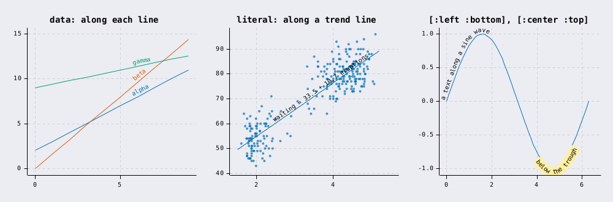
15.3.4 Path
These options lay a label’s text along a line instead of at a point:
The path comes from a line’s own rows (left) or from literal positions with one text: a fitted trend line (middle) and a sine wave (right). The second value of :anchor picks the side of the path: :bottom puts the text’s bottom on the path, so the text sits above it; :middle centres it on the path; :top hangs it below. :offset [dx dy] moves the text along the path and up from it in pixels. The letters keep their spacing through bends and read upright by the path’s overall direction (a vertical path reads bottom to top). A :background, inline or the role’s, fills a band under the letters, :inset past them (right); a text longer than its path isn’t drawn.
(let [eruptions (map :eruptions faithful)
waiting (map :waiting faithful)
slope (/ (stats/covariance eruptions waiting) (stats/variance eruptions))
intercept (- (stats/mean waiting) (* slope (stats/mean eruptions)))
xs [1.5 5.2]
ys (mapv #(+ intercept (* slope %)) xs)
wave (m/slice-range 0.0 m/TWO_PI 60)]
(plot/render-image (plot/arrange [{:data growth :mapping {:x :t :y :v :color :g}
:charts [(chart/line)
(chart/text {:mapping {:x :t :y :v :color :g :label :g} :along-path true
:path-position 0.7 :anchor [:center :bottom] :offset [0 2]})]
:labels {:title "data: along each line"}
:legend false}
{:data faithful :mapping {:x :eruptions :y :waiting}
:charts [(chart/scatter {:size 4})
(chart/function {:f #(+ intercept (* slope %)) :domain [1.5 5.2]})
(chart/text {:x xs :y ys :text (format "waiting = %.1f + %.1f eruptions" intercept slope)
:along-path true :path-position 0.6 :anchor [:center :bottom]})]
:labels {:title "literal: along a trend line"}}
{:data (map (fn [x] {:x x :y (m/sin x)}) wave) :mapping {:x :x :y :y}
:charts [(chart/line)
(chart/text {:x (vec wave) :y (mapv m/sin wave) :text "a text along a sine wave"
:along-path true :path-position 0.0 :anchor [:left :bottom] :offset [0 2]})
(chart/text {:x (vec wave) :y (mapv m/sin wave) :text "below the trough" :along-path true
:path-position 0.75 :anchor [:center :top]
:background [255 240 160] :inset 2})]
:labels {:title "[:left :bottom], [:center :top]"}}]
{:columns 3})
{:width 1000 :height 330}))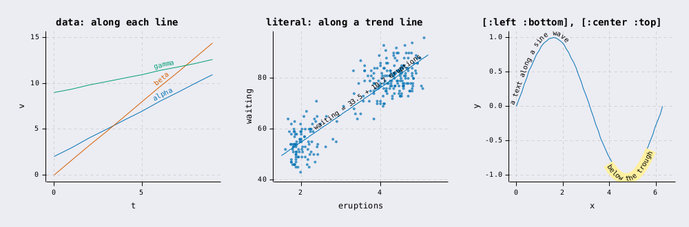
15.4 Images
chart/image draws a picture into the panel: a function takes the panel’s scales, domains and pixel size and returns the image. Use it for a background picture, a geographic map or a raster computed per panel; it reads no data. Here a radial gradient over the data range [-1 1] × [-1 1], which :domain sets:
(plot/render-image {:charts [(chart/image {:domain {:x [-1 1] :y [-1 1]}
:f (fn [{[w h] :size}]
(let [w (int w) h (int h)
img (BufferedImage. w h BufferedImage/TYPE_INT_RGB)]
(doseq [i (range w) j (range h)
:let [d (m/hypot (- (/ (* 2.0 i) w) 1) (- (/ (* 2.0 j) h) 1))
c (int (* 255 (max 0.0 (- 1.0 (* 0.7 d)))))]]
(.setRGB img i j (+ (* 65536 c) (* 256 (quot c 2)) 80)))
img))})]}
{:width 450 :height 350})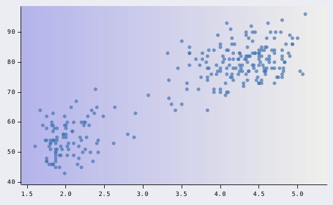
Its options give the function and the data range the axes must show; the image always fills the panel. Without :domain the axes follow the other charts’ domains, here a scatter’s, which draws over the image:
(plot/render-image {:data faithful
:mapping {:x :eruptions :y :waiting}
:charts [(chart/image {:f (fn [{[w h] :size}]
(let [w (int w) h (int h)
img (BufferedImage. w h BufferedImage/TYPE_INT_RGB)]
(doseq [i (range w) j (range h)
:let [c (int (+ 180 (* 60 (/ (double i) w))))]]
(.setRGB img i j (+ (* 65536 c) (* 256 c) 235)))
img))})
(chart/scatter)]}
{:width 550 :height 340})
15.5 Function curves
chart/function draws curves of functions, y = f(x) or parametric [x y] = f(t), sampled over :domain (or :t), by default the panel’s x range. Use it for a known curve, a model or a reference shape; the chart’s own mapping can colour or dash several functions by their labels.
:mapping:color– Splits the rows, one per function, into groups, each with its own colour.:dash– Splits the rows, one per function, into groups, each with its own dash style.:group– Splits the rows into groups that look the same, one row per function.
(plot/render-image {:charts [(chart/function {:f {"sin" #(m/sin %) "cos" #(m/cos %)}
:domain [0 m/TWO_PI]
:mapping {:color :function :dash :function}})]}
{:width 600 :height 320})
15.5.1 Curve
These options give the functions, the range they are sampled over and how densely, the fill and the chart’s own mapping:
(plot/render-image (plot/arrange [{:charts [(chart/function {:f #(* % % 0.5) :domain [-2 2] :fill [0 114 178 60]})]
:labels {:title ":f, :fill"}}
{:charts [(chart/function {:parametric (fn [t] [(m/sin (* 3 t)) (m/sin (* 4 t))])
:t [0 m/TWO_PI] :fill [200 80 40 60]})]
:aspect :iso
:labels {:title ":parametric (Lissajous)"}}
{:charts [(chart/function {:f #(m/sin %) :domain [0 10] :sample-step 25})]
:labels {:title ":sample-step 25 px"}}]
{:columns 3})
{:width 1000 :height 320})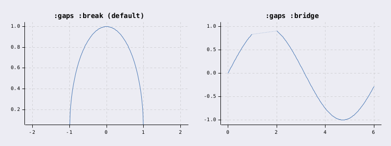
15.5.2 Gaps
These options handle a nil or non-finite result of a function:
(plot/render-image (plot/arrange [{:charts [(chart/function {:f #(m/sqrt (- 1 (* % %))) :domain [-2 2]})]
:labels {:title ":gaps :break (default)"}}
{:charts [(chart/function {:f #(when-not (< 1 % 2) (m/sin %)) :domain [0 6]
:gaps :bridge :bridge {:alpha-factor 0.6 :dash :dotted}})]
:labels {:title ":gaps :bridge"}}]
{:columns 2})
{:width 800 :height 300})
15.5.3 Extent
These options pick the samples that set the y axis and the room around the curve. Here tan has poles: the default quantiles keep the axis readable, all samples stretch it, :y-limits sets it:
(plot/render-image (plot/arrange [{:charts [(chart/function {:f #(m/tan %) :domain [0 3]})]
:labels {:title ":y-extent :quantiles (default)"}}
{:charts [(chart/function {:f #(m/tan %) :domain [0 3] :y-extent :min-max})]
:labels {:title ":y-extent :min-max"}}
{:charts [(chart/function {:f #(m/tan %) :domain [0 3] :y-limits [-5 5]})]
:labels {:title ":y-limits [-5 5]"}}]
{:columns 3})
{:width 1000 :height 300})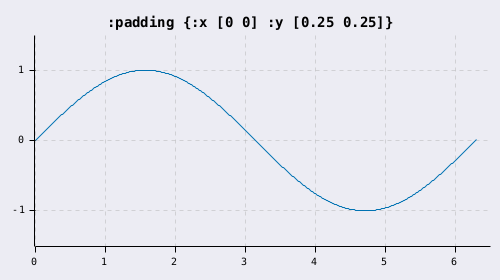
With no padding on x the curve meets the panel’s sides; a quarter of the span on y leaves room above and below:
(plot/render-image {:charts [(chart/function {:f #(m/sin %) :domain [0 6.3] :padding {:x [0 0] :y [0.25 0.25]}})]
:labels {:title ":padding {:x [0 0] :y [0.25 0.25]}"}}
{:width 500 :height 280})
source: notebooks/reference/charts_annotations.clj